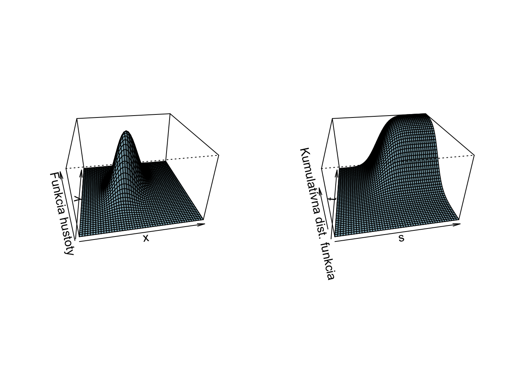
7 Súvis medzi náhodnými premennými
Potrebujeme matematický aparát na to, aby sme vedeli pracovať s viacerými náhodnými premennými naraz. Potrebujeme vedieť, ako rôzne náhodné premenné spolu súvisia. Začneme s dvomi náhodnými premennými \(X\) a \(Y\). Dve náhodné premenné dokopy tvoria dvojrozmerný náhodný vektor \((X,Y)^T\). Skúmať súvis medzi náhodnými premennými sa preto nedá bez toho, že by sme vedeli ako udalosti nastávajú spolu.
Združená kumulatívna distribučná funkcia \(F_{XY}: \mathbb{R}^2 \rightarrow [0,1]\) náhodného vektora \((X,Y)^T\) je definovaná nasledovne:
\[F_{XY}(s,t) = P(X \leq s \cap Y \leq t) = P(X \leq s, Y \leq t).\] Ide len o dvojrozmerný ekvivalent toho, čo sme už videli predtým.
Diskrétne náhodné premenné
Ak sú elementy náhodného vektora diskrétne rozdelené náhodné premenné, potom alternatívne môžeme na popis náhodnosti použiť združenú pravdepodobnostnú funkciu
\[p_{XY}(x,y) = P(X=x \cap Y=y) = P(X=x, Y=y).\]
Aby táto bola korektná, tak musí platiť
- \(\forall x \in \mathcal{S}_X, y \in \mathcal{S}_Y: p_{XY}(x,y) \geq 0,\)
- \(\sum_{x \in \mathcal{S}_X}\sum_{y \in \mathcal{S}_Y}p_{XY}(x,y)=1,\)
- \(\forall x \in \mathcal{S}_X: \sum_{y \in \mathcal{S}_Y} p_{XY}(x,y)= p_X(x),\)
- \(\forall y \in \mathcal{S}_Y: \sum_{x \in \mathcal{S}_X} p_{XY}(x,y)= p_Y(y).\)
Spojité náhodné premenné
Ak sú elementy náhodného vektora spojite rozdelené, tak potrebujeme združenú funkciu hustoty \(f_{XY}(x,y): \mathbb{R}^2 \rightarrow \mathbb{R}^{+},\) ktorá spĺňa nasledovnú vlastnosť
\[P\left(X \in [a,b] \cap Y \in [c,d] \right) = P\left(X \in [a,b], Y \in [c,d] \right) = \int_{a}^{b} \int_{c}^{d} f_{XY}(x,y) dy dx.\]
Funkcia hustoty musí spĺňať nasledovné vlastnosti
- \(\forall x \in \mathbb{R}, y \in \mathbb{R}: f_{XY}(x,y) \geq 0,\)
- \(\int_{-\infty}^{\infty} \int_{-\infty}^{\infty} f_{XY}(x,y) dx dy =1,\)
- \(\forall x \in \mathbb{R}: \int_{-\infty}^{\infty} f_{XY}(x,y) dy= f_X(x),\)
- \(\forall y \in \mathbb{R}: \int_{-\infty}^{\infty} f_{XY}(x,y) dx= f_Y(y).\)
Vzťah medzi \(f_{XY}\) a \(F_{XY}\) je nasledovný:
\[F_{XY}(s,t) = \int_{-\infty}^{s} \int_{-\infty}^{t} f_{XY}(x,y) dy dx\] a
\[ f_{XY}(x,y) = \frac{\partial^2}{\partial x \partial y }F_{XY}(x,y).\]
Tu je vizualizovanú jeden konkrétny príklad pre \(f_{XY}\) a \(F_{XY}\)
Tu je vizualizovaná \(p_{XY}\) a \(F_{XY}\) pre diskrétne rozdelený náhodný vektor \((X,Y)\), kde \(X\) a \(Y\) sú čísla, ktoré padnú na dvoch nezávislých kockách.
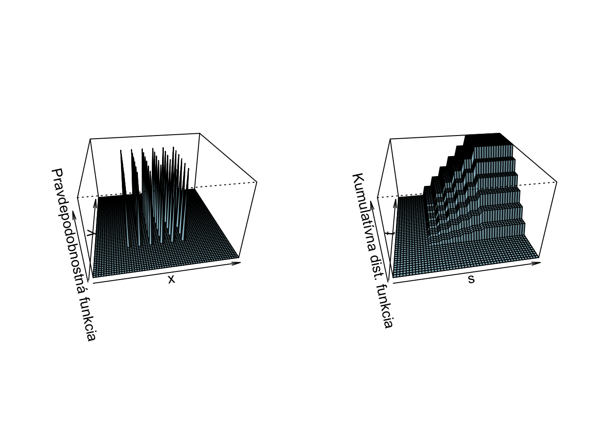
7.1 Nezávislé náhodné premenné
Hovoríme, že dve náhodné premenné \(X\) a \(Y\) sú nezávislé ak
\[\forall x \in \mathcal{S}_X, y \in \mathcal{S}_Y: p_{XY}(x,y) = p_{X}(x) \cdot p_Y(y),\] ak sú diskrétne rozdelené a
\[\forall x \in \mathbb{R}, y \in \mathbb{R}: f_{XY}(x,y) = f_{X}(x) \cdot f_Y(y),\] ak sú spojite rozdelené. Informácia o pravdepodobnostných správaniach \(X\) a \(Y\) je preto dostatočná na to, aby sme vedeli, ako sa budú správať spolu.
Alternatívna definícia nezávislosti je
\[\forall B_1, B_2 \subseteq \mathbb{R}: P(X \in B_1, Y \in B_2) = P(X \in B_1) \cdot P(Y \in B_2).\]1
alebo, taktiež ekvivalentne
\[\forall s,t \in \mathbb{R}: F_{XY}(s,t) = F_{X}(s) \cdot F_{Y}(t).\] Poľahky si všimneme, že voľbou \(B_1 = (-\infty,s]\) a \(B_2 = (-\infty,t]\) dostávame vzťah s predošlou definíciou.
Pre nezávislé náhodné premenné platí, že ak \(X\) a \(Y\) sú nezávislé potom sú aj \(h_1(X)\) a \(h_2(Y)\) sú nezávislé náhodné premenné, kde \(h_1\) a \(h_2\) sú nejaké transformácie.2 Napríklad, \(X^2\) a \(Y\), kde \(h_1(x)=x^2\) a \(h_2(y)=y\).
Príklad 7.1 Majme nasledovnú združenú hustotu pravdepodobnosti pre náhodný vektor \((X,Y).\)
\[\begin{equation*} f_{XY}(x,y)= \begin{cases} \frac{1}{4}, & \text{ak}\ x,y \in [0,2], \\ 0, & \text{inak} \end{cases} \end{equation*}\]Sú \(X\) a \(Y\) nezávislé náhodné premenné?
7.2 Miera závislosti
Zatiaľčo \(p_{XY}, f_{XY}, F_{XY}\) popisujú súvis náhodných premenných úplne, niekedy máme potrebu charakterizovať súvis jediným číslom. Podobne ako sme pomocou strednej hodnoty vyjadrovali centrum distribúcie a pomocou variancie to, ako veľmi sa náhodná premenná menila.
Kovarianciou dvoch náhodných premenných nazývame
\[\text{Cov}[X,Y] \equiv \text{E}[(X-\text{E}[X])(Y-\text{E}[Y])].\]
Pre kovarianciu platí \(\text{Cov}[X,Y] = \text{E}[XY] - \text{E}[X]\text{E}[Y]\) a \(\text{Cov}[X,X] = \text{Var}[X].\)
Pre nezávislé náhodné premenné platí \(\text{E}[XY] =\text{E}[X]\text{E}[Y]\) a preto \(\text{Cov}[X,Y]=0\).
Pre varianciu súčtu dvoch náhodných premenných platí: \[\text{Var}[X+Y] = \text{Var}[X] + \text{Var}[Y] + 2\text{Cov}[X,Y].\] Vysvetlenie je tu a je založené na linearite strednej hodnoty: \[ \begin{split} \text{Var}[X+Y] &= \text{E}\left[ ((X+Y)-\text{E}[X+Y])^2 \right] \\ &= \text{E}\left[ ([X-\text{E}[X]) + (Y-\text{E}[Y]])^2 \right] \\ &= \text{E}\left[ (X-\text{E}[X])^2 + (Y-\text{E}[Y])^2 + 2 \, (X-\text{E}[X]) (Y-\text{E}[Y]) \right] \\ &= \text{E}\left[ (X-\text{E}[X])^2 \right] + \text{E}\left[ (Y-\text{E}[Y])^2 \right] + \text{E}\left[ 2 \, (X-\text{E}[X]) (Y-\text{E}[Y]) \right] \\ &= \text{Var}[X] + \text{Var}[Y] + 2 \, \text{Cov}[X,Y] \; . \\ \end{split} \]
Takže pre nezávislé náhodné premenné platí \[\text{Var}[X+Y] = \text{Var}[X] + \text{Var}[Y] + 2\underbrace{\text{Cov}[X,Y]}_{=0} = \text{Var}[X] + \text{Var}[Y].\]
Koreláciou dvoch náhodných premenných nazývame
\[\text{Corr}[X,Y] \equiv \frac{\text{Cov}[X,Y]}{\text{sd}[X] \cdot \text{sd}[Y] } = \frac{ \text{E}[(X-\text{E}[X])(Y-\text{E}[Y])]}{\sqrt{\text{E}[(X-\text{E}[X])^2]}\cdot\sqrt{\text{E}[(Y-\text{E}[Y])^2]}}.\]
Pre koreláciu platí:
- \(-1 \leq \text{Corr}[X,Y] \leq 1\), je bezrozmerná, t.j. nemá žiadne jednotky,
- \(\text{Corr}[X,Y] = \text{Corr}[Y,X]\) takže korelácia je symetrická,
- \(\text{Corr}[X,Y] = \pm 1 \implies \exists a,b \in \mathbf{R}: Y = aX+b\), nadobúda hodnoty \(\pm 1\) práve vtedy, keď je jedna náhodná premenná lineárnou funkciou druhej,
- \(X\) a \(Y\) sú nezávislé \(\implies \text{E}[XY] = \text{E}[X]\text{E}[Y] \implies \text{Cov}[X,Y]=0 \implies \text{Corr}[X,Y]=0\)
Skutočnosť, že súvis dvoch náhodných premenných vyjadríme jediným číslom, so sebou nesie aj náklady. Kompaktnejší popis musí nutne nejakú informáciu vynechať, čo môže, ale nemusí byť problematické. Nasledujúci obrázok demonštruje realizácie 12 rôznych dvojích náhodných premenných \((X,Y)\), ktoré majú rovnaké \(\text{E}[X],\text{E}[Y],\text{Var}[X],\text{Var}[Y],\text{Corr}[X,Y].\) (Zdroj: https://cran.r-project.org/web/packages/datasauRus/vignettes/Datasaurus.html). V týchto prípadoch sú závislosti medzi týmito premennými veľmi veľmi rôzne. Pozerať sa len na sumárne charakteristiky je preto zavádzajúce.
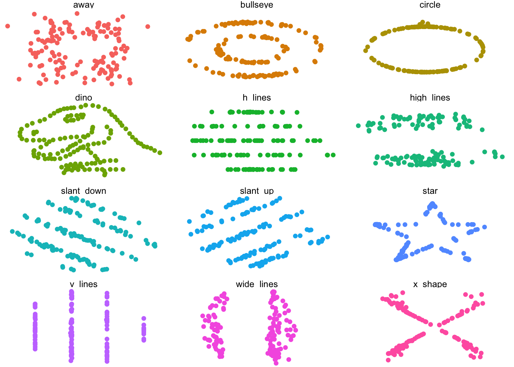
Korelácia je miera lineárnej závislosti. Z toho, že \(\text{Corr}[X,Y]=0\), nevyplýva, že \(X\) a \(Y\) sú nezávislé. A to jednoducho preto, že medzi nimi môže byť aj iná ako lineárna závislosť, ako demonštruje nasledovný príklad.
Príklad 7.2 Majme \(X \sim \text{Unif}[-1,1]\) a \(Y = X^2.\) Tomuto zodpovedajú nasledovné funkcie hustoty
\[\begin{equation*} f_X(x)= \begin{cases} \frac{1}{2}, & \text{ak}\ x \in [-1,1], \\ 0, & \text{inak} \end{cases} \end{equation*}\]a
\[\begin{equation*} f_Y(y)= \begin{cases} \frac{1}{2\sqrt{y}}, & \text{ak}\ y \in [0,1], \\ 0, & \text{inak}. \end{cases} \end{equation*}\]Združená hustota \(f_{XY}\) je \(0\) všade tam, kde \(Y>X\), ale \(f_X \times f_Y\) tam nie je nutne \(0\), preto \(X\) a \(Y\) nie sú nezávislé. Zároveň však platí (ukážte prečo) \(\text{E}[X] = 0,\text{E}[Y] = \frac{1}{3}\) a \(\text{Cov[X,Y]} = \text{E}[(X-\text{E}[X])(Y-\text{E}[Y])] = \text{E}\left[\left(X-0\right)\left(X^2-\frac{1}{3}\right)\right] = 0.\)
Teda \(X\) a \(Y\) sú závislé (však \(Y\) je priamo funkciou \(X\)!), ale nekorelované (teda lineárne nezávislé).
Príklad 7.3 Nech \(X \sim N(0,1)\) a nech
\[\begin{equation*} Y= \begin{cases} X, & \text{ak}\ |X| \leq c, \\ -X, & \text{inak}, \end{cases} \end{equation*}\]Pre hodnotu \(c\) veľmi malú je \(\text{Corr}[X,Y] \approx -1\), naopak, pre \(c\) veľmi veľké je to \(\text{Corr}[X,Y] \approx 1.\) Nakoľko sa táto korelácia spojite mení s \(c\), podľa Vety o strednej hodnote musí existovať hodnota \(c\) taká, že \(\text{Corr}[X,Y]=0.\) Na druhej strane, \(X\) a \(Y\) nemôžu byť nezávislé, nakoľko \(Y\) je deterministickou funkciou \(X.\)
Takto vyzerá realizácia 100 náhodných vektorov \((X,Y)\) s rôznymi koreláciami.
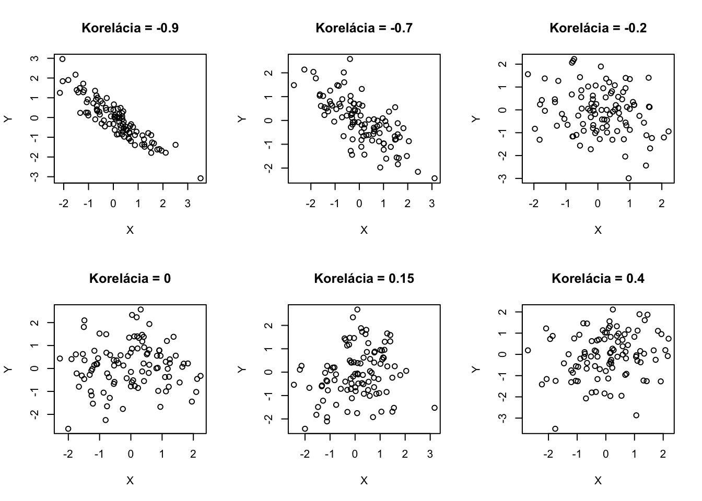
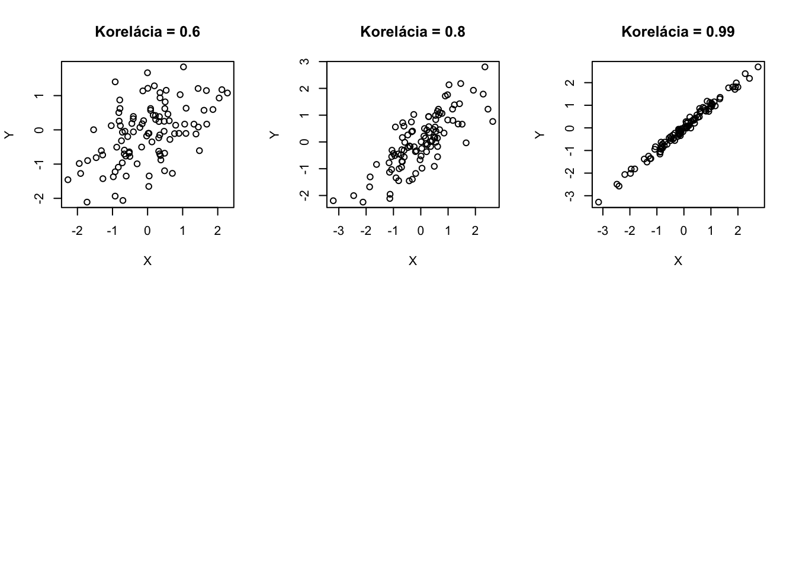
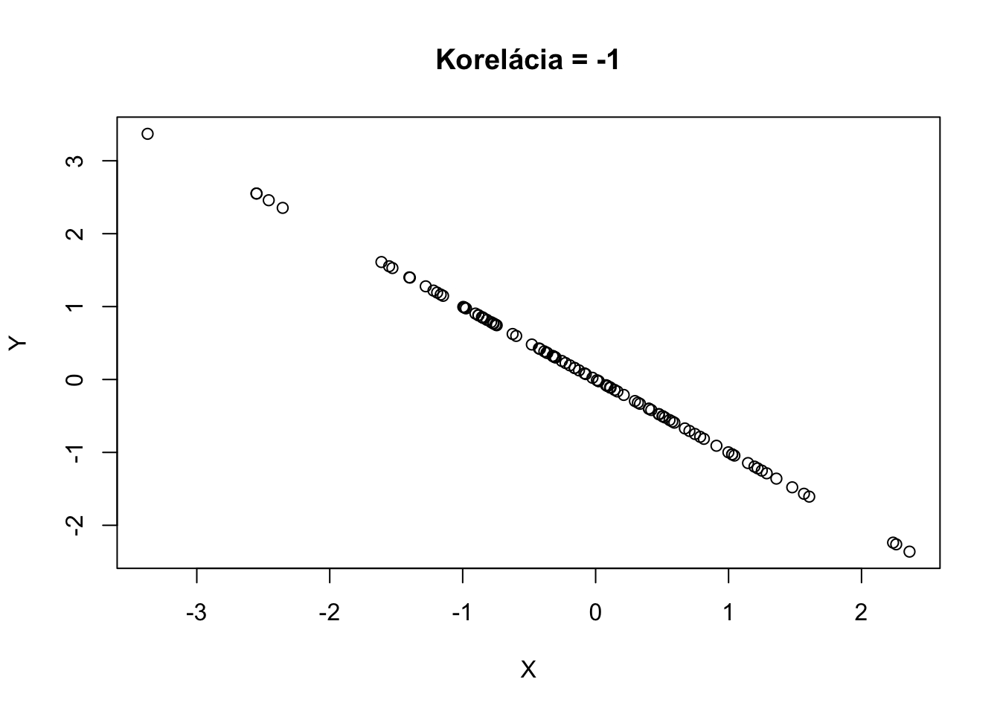
Korelácia hovorí o asociácii, ale pozor, nie o kauzalite. Skutočnosť, že hodnoty \(X\) a \(Y\) nejakým spôsobom nastávajú naraz neznamená, že \(X\) spôsobuje \(Y\) alebo naopak. Napríklad predaje zmrzliny (\(X\)) sú korelované s napadnutiami žralakom (\(Y\)). Neznamená to ale, že tieto premenné spolu kauzálne súvisia. Ľudia skrátka jedia zmrzlinu ako aj surfujú viacej vtedy, keď je teplo.
Teraz nejaký príklad na počítanie:
Príklad 7.4 Majme \(X,Y\) pre ktoré je \(p_{XY}\) vyjadrená nasledovnou tabuľkou.
Pravdedpodobnostná funkcia
|
||||
|---|---|---|---|---|
| Y=1 | Y=2 | Y=3 | Y=4 | |
| X=1 | 0.1 | 0 | 0.1 | 0 |
| X=2 | 0.3 | 0 | 0.1 | 0.2 |
| X=3 | 0 | 0.2 | 0 | 0 |
Vypočítajte \(\text{Corr}[X,Y].\)
\[\begin{eqnarray*} \text{E}[X] &=& 1 \cdot (0.1+0+ 0.1+0) + 2 \cdot (0.3+0+0.1+0.2)+ \\ && 3 \cdot (0 + 0.2 + 0 + 0) = 2, \\ \text{E}[X^2] &=& 1^2 \cdot (0.1+0+ 0.1+0) + 2^2 \cdot (0.3+0+0.1+0.2)+ \\ && 3^2 \cdot (0 + 0.2 + 0 + 0) = 4.4, \\ \text{Var}[X] &=& \text{E}[X^2] - (\text{E}[X])^2 = 4.4-4 =0.4,\\ \text{sd}[X] &=&\sqrt{\text{Var}[X]} \approx 0.632,\\ \text{E}[Y] &=& 1 \cdot(0.1+0.3+0) + 2 \cdot(0+0+0.2) +\\ && 3 \cdot(0.1+0.1+0) + 4 \cdot(0+0.2+0) = 2.2,\\ \text{E}[Y^2] &=& 1^2 \cdot(0.1+0.3+0) + 2^2 \cdot(0+0+0.2) +\\ && 3^2 \cdot(0.1+0.1+0) + 4^2 \cdot(0+0.2+0) = 6.2,\\ \text{Var}[Y] &=& \text{E}[Y^2] - (\text{E}[Y])^2 = 6.2-4.84 = 1.36,\\ \text{sd}[Y] &=&\sqrt{\text{Var}[Y]} \approx 1.166,\\ \text{E}[XY] &=& 1\cdot 1 \cdot 0.1 + 1 \cdot 2 \cdot 0 + 1 \cdot 3 \cdot 0.1 + 1 \cdot 4 \cdot 0 + \\ && 2\cdot 1 \cdot 0.3 + 2 \cdot 2 \cdot 0 + 2 \cdot 3 \cdot 0.1 + 2 \cdot 4 \cdot 0.2 + \\ && 3\cdot 1 \cdot 0 + 3 \cdot 2 \cdot 0.2 + 3 \cdot 3 \cdot 0 + 3 \cdot 4 \cdot 0 = 4.4, \\ \text{Cov}[X,Y] &=& \text{E}[XY] - \text{E}[X]\text{E}[Y] = 4.4 - 2 \cdot 2.2 = 0,\\ \text{Corr}[X,Y] &=& 0. \end{eqnarray*}\]Príklad 7.5 Uvažujme náhodný vektor \((X, Y)\), ktorý je rovnomerne rozdelený na trojuholníku
\[ T = \left\{ (x, y) \in \mathbb{R}^2 : 0 \le y \le x \le 1 \right\} \]
Ide o dolný trojuholník pod uhlopriečkou danou vzťahom \(y = x\) v jednotkovom štvorci.
Obsah trojuholníka je daný integrovaním jednotky cez relevantnú oblasť:
\[ \text{Obsah}(T) = \int_0^1 \int_0^x 1 \, dy\, dx = \int_0^1 x\,dx = \frac{1}{2}. \] Alternatívne (vymenením poradia integrovania): \[ \text{Obsah}(T) = \int_0^1 \int_y^1 1 \, dx\, dy = \int_0^1 (1-y)\,dy = \left[ y - \frac{y^2}{2}\right]_0^1 =\frac{1}{2}. \]
Preto spoločná hustota je:
\[ f_{X,Y}(x, y) = \begin{cases} 2 & \text{ak } 0 \le y \le x \le 1 \\ 0 & \text{inak} \end{cases} \]
\[ f_X(x) = \int_0^x f_{X,Y}(x, y)\,dy = \int_0^x 2\,dy = 2x,\quad x \in [0, 1] \]
\[ f_Y(y) = \int_y^1 f_{X,Y}(x, y)\,dx = \int_y^1 2\,dx = 2(1 - y),\quad y \in [0, 1] \]
Ak by \(X\) a \(Y\) boli nezávislé, platilo by:
\[ f_{X,Y}(x, y) = f_X(x) \cdot f_Y(y) \]
Skúsme overiť pre \(x = 0{,}6\), \(y = 0{,}4\):
\[ \begin{align*} f_{X,Y}(0{,}6, 0{,}4) &= 2 \\ f_X(0{,}6) &= 2 \cdot 0{,}6 = 1{,}2 \\ f_Y(0{,}4) &= 2 \cdot (1 - 0{,}4) = 1{,}2 \\ f_X(0{,}6) \cdot f_Y(0{,}4) &= 1{,}2 \cdot 1{,}2 = 1{,}44 \ne 2 \end{align*} \]
Napriek tomu, že spoločné rozdelenie je rovnomerné na platnej oblasti, premenné \(X\) a \(Y\) nie sú nezávislé, pretože hodnota jednej obmedzuje rozsah druhej.
7.3 Vizualizácie
Nasledujúce animácie vám môžu pomôcť intuitívne uchopiť tieto nové objekty.
Najprv si ukážeme hustotu združene normálneho rozdelenia
\[ f_{XY}(x,y) = \frac{1}{2\pi \sqrt{|\mathbf{\Sigma}|}} \exp\left[ -\frac{1}{2} \left(\begin{pmatrix} x\\ y \end{pmatrix} - \begin{pmatrix} \mu_X\\ \mu_Y \end{pmatrix}\right)^\top \mathbf{\Sigma}^{-1} \begin{pmatrix} x\\ y \end{pmatrix} - \begin{pmatrix} \mu_X\\ \mu_Y \end{pmatrix} \right] \]
kde:
- \(\begin{bmatrix} {\color{blue}x} \\ {\color{redy} \end{bmatrix}\) je dvojrozmerný vektor,
- \(\mathbf{\mu} = \begin{bmatrix} {\color{blue}\mu_X} \\ {\color{red}\mu_Y} \end{bmatrix}\) je vektor stredných hodnôt,
- \(\mathbf{\Sigma} = \begin{bmatrix} {\color{blue}\sigma_X}^2 & \rho{\color{blue}\sigma_X}{\color{red}\sigma_Y} \\ \rho{\color{blue}\sigma_X}{\color{red}\sigma_Y} & {\color{red}\sigma_Y}^2 \end{bmatrix}\) je kovariančná matica,
- \(|\mathbf{\Sigma}|\) je determinant kovariančnej matice.
Nižšie je táto hustota pre \({\color{blue}\mu_X = 0},{\color{red}\mu_Y = 0},{\color{blue}\sigma_X = 0.5}\) a \({\color{red}\sigma_Y = 1}\): \[\mathbf{\mu} = \begin{bmatrix} {\color{blue}0} \\ {\color{red}0} \end{bmatrix} \ \ \ \ \text{a} \ \ \ \ \mathbf{\Sigma} = \begin{bmatrix} {\color{blue}0.5}^2 & 0.3 \cdot {\color{blue}0.5} \cdot {\color{red}1} \\ 0.3 \cdot {\color{blue}0.5} \cdot {\color{red}1} & {\color{red}1}^2 \end{bmatrix} = \begin{bmatrix} 0.25 & 0.15 \\ 0.15 & 1 \end{bmatrix},\] teda korelácia je \(0.3\). Vyššie hodnoty prvej koordináty sú asociované s (mierne) vyššími hodnotami druhej koordináty. Modrou farbou je označená náhodná premenná \(X\), ktorá má pravdepodobnostné rozdelenie \({\color{blue}X \sim N(0,0.5^2)}\) (a teda nižšou varianciou ako \(Y\)). Červenou farbou je označená náhodná premenná \(Y,\) ktorej rozdelenie je štandardné normované normálne rozdelenie \({\color{red}Y \sim N(0,1)}.\)
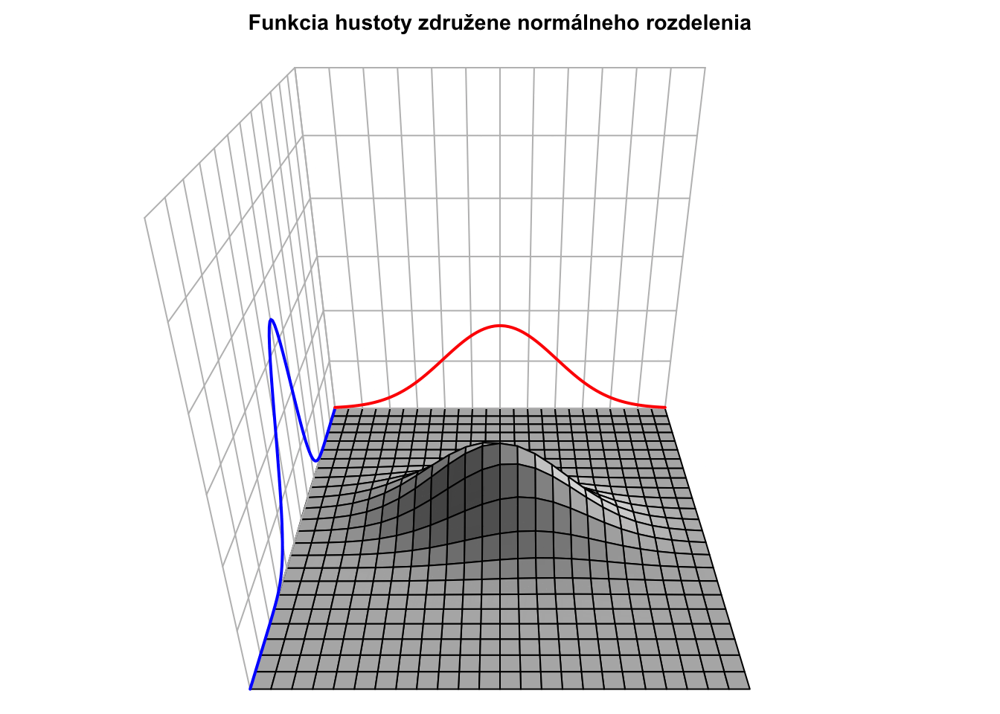
Kumulatívna distribučná funkcia je len dvojitým integrálom cez horné medze.
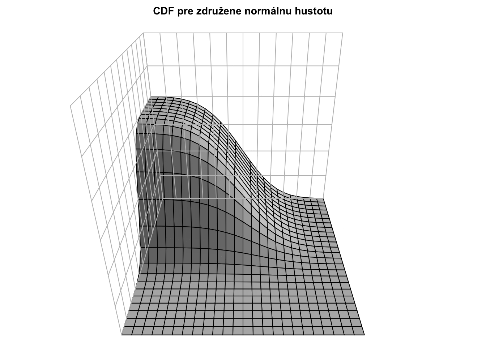
Pre rôzne korelácie majú hustoty (teda “kopčeky”) rôzne tvary, napriek tomu, že marginálne distribúcie sú rovnaké.
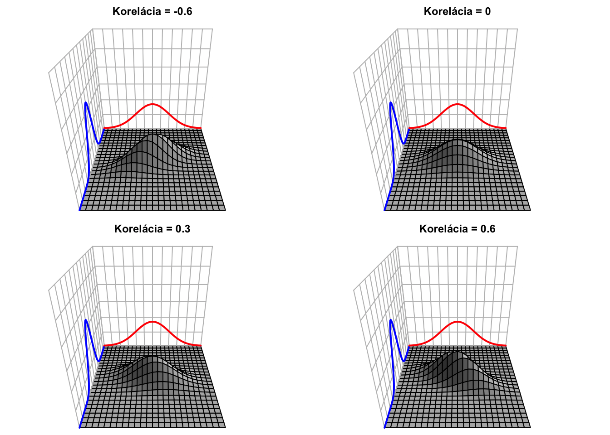

Pre dvojrozmerné rovnomerné (uniformné) rozdelenie je funkcia hustoty nasledovná
\[f_{XY}(x,y) = \begin{cases} 1 & \text{ak } x \in [0,1], y \in [0,1] \\ 0 & \text{inak } \end{cases}\]
a vyzerá takto:
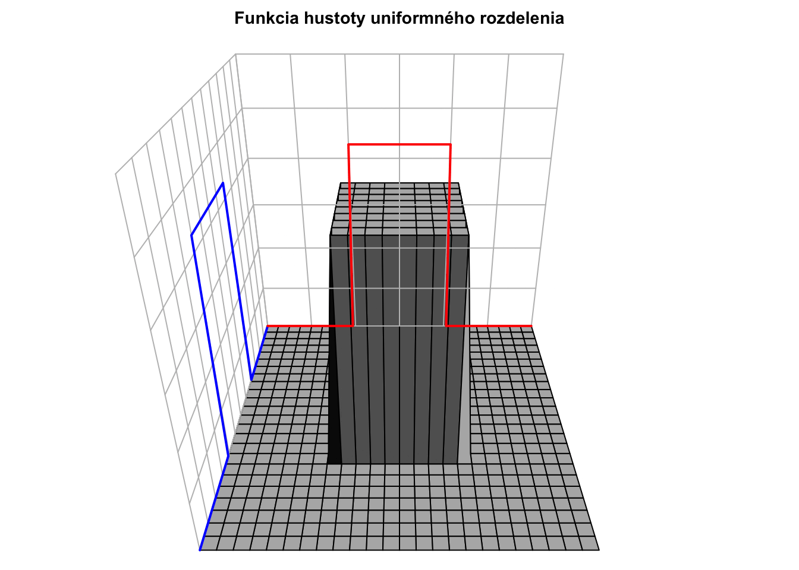
Kumulatívna distribučná funkcia má takýto tvar:
\[ F_{XY}(s, t) = \int_{-\infty}^{s} \int_{-\infty}^{t} f_{XY}(x,y) dy dx = \begin{cases} 0 & \text{ak } s < 0 \text{ alebo } t < 0 \\ xy & \text{ak } 0 \leq s \leq 1,\, 0 \leq t \leq 1 \\ 1 & \text{ak } s > 1 \text{ a } t > 1 \\ y & \text{ak } 0 \leq t \leq 1 \text{ a } s > 1 \\ x & \text{ak } 0 \leq s \leq 1 \text{ a } t > 1 \end{cases} \] a vyzerá takto:
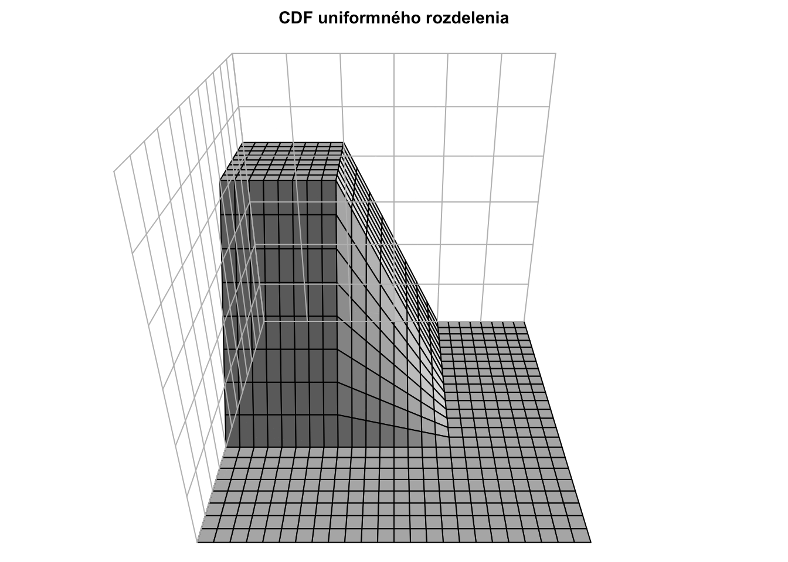
Zaujímavé zdroje (cudzie, nie moje):
- Interaktívne kreslítko Bobrovnikov, Mark, Jared Tianyi Chai, and Ivo D. Dinov. “Interactive visualization and computation of 2D and 3D probability distributions.” SN computer science 3.4 (2022): 327.
- V GeoGebre Peter Sassman
7.4 Cvičenia
Cvičenie 7.1 Zostrojte združenú pravdepodobnostnú funkciu pre \(X,Y\) tak, aby súčasne platilo:
- \(\text{E}[X] = 2,\)
- \(\text{E}[Y] = 2,\)
- \(\text{Cov}[X,Y] = 0,\)
- \(P(X\geq Y) = 0.5.\)
Ak sa to nedá dokážte prečo.
Cvičenie 7.2 Majme náhodné premenné \(X,Y\) s nasledovnou združenou funkciou hustoty
\[\begin{equation*} f_{XY}(x,y)= \begin{cases} cy^2, & \text{ak}\ x \in [0,2], \ y \in [0,1],\\ 0, & \text{inak}. \end{cases} \end{equation*}\]Vypočítajte
- hodnotu konštanty \(c,\)
- \(P(X \leq 1),\)
- \(P(X+Y > 2),\)
- \(P(X > Y),\)
- \(P(X = 3Y),\)
- \(\text{E}[Y],\)
- \(\text{Cov}[X,Y].\)
Cvičenie 7.3 Nech \(X \sim N(0,1)\) a nech \(W\) má nasledovnú pravdepodobnostnú funkciu
\[\begin{equation*} p_W(w)= P(W=w) = \begin{cases} \frac{1}{2}, & \text{ak}\ w = 1 , \\ \frac{1}{2}, & \text{ak}\ w = -1 , \\ 0, & \text{inak}. \end{cases} \end{equation*}\]Nech naviac \(X\) a \(W\) sú nezávislé náhodné premenné. Zadefinujme \(Y = X W.\) Ukážte, že \(\text{Cov}[X,Y]=0\) a že náhodné premenné \(X\) a \(Y\) nie sú nezávislé.
Cvičenie 7.4 Ukážte, že pre náhodné premenné, pre ktoré platí \(Y = aX + b,\) je \(\text{Corr}[X,Y] = 1\) alebo \(\text{Corr}[X,Y] = -1.\)
Cvičenie 7.5 Ukážte, že pre nezávislé náhodné premenné platí \(\text{E}[X \cdot Y] = \text{E}[X] \text{E}[Y].\) Ukážte tiež, že opačná implikácia neplatí.
Cvičenie 7.6 Ukážte, že pre nezávislé náhodné premenné platí \(\text{Var}[X + Y] = \text{Var}[X] + \text{Var}[Y].\) Ukážte tiež, že opačná implikácia neplatí.
Cvičenie 7.7 Nech \(X\) je počet obedov objednaných na stôl počas obeda. Nech \(Y\) je počet nápojov objednaných na ten istý stôl počas obeda.
Nech \(p_{XY}\) je vyjadrená nasledovnou tabuľkou.
Pravdedpodobnostná funkcia
|
|||||
|---|---|---|---|---|---|
| Y=0 | Y=1 | Y=2 | Y=3 | Y=4 | |
| X=0 | 0 | 0.01 | 0.05 | 0 | 0 |
| X=1 | 0.05 | 0.05 | 0.05 | 0 | 0 |
| X=2 | 0.01 | 0.05 | 0.3 | 0.01 | 0 |
| X=3 | 0 | 0 | 0.01 | 0.1 | 0 |
| X=4 | 0 | 0 | 0 | 0.01 | 0.3 |
Vypočítajte
pravdepodobnosť, že na stôl sú objednané viac ako 2 obedy
pravdepodobnosť, že na stôl sú objednané viac ako 2 obedy a viac ako 2 nápoje
pravdepodobnosť, že na stôl je objednaných viac nápojov ako obedov
priemerný počet objednaných obedov
priemerný počet objednaných nápojov
koreláciu medzi počtom obedov a počtom nápojov objednaných na stôl
Cvičenie 7.8 Majme náhodné premenné \(X,Y\) s nasledovnou združenou pravdepodobnostnou funkciou
\[\begin{equation*} p_{XY}(x,y)= \begin{cases} c|x+y|, & \text{ak}\ x \in \{-1,0,1 \},\\ & \ y \in \{-2,0,2 \},\\ 0, & \text{inak}. \end{cases} \end{equation*}\]
Vypočítajte
hodnotu konštanty \(c,\)
\(P(X = 1),\)
\(P(Y = 2X),\)
\(P(Y < 1)\)
\(\text{E}[X],\text{E}[Y]\)
\(\text{Cov}[X,Y], \text{Corr}[X,Y].\)
Cvičenie 7.9 Majme náhodné premenné \(X,Y\) s nasledovnou združenou funkciou hustoty.
\[\begin{equation*} f_{XY}(x,y) = \begin{cases} \frac{1}{6}(xy+\frac{1}{2}), & \text{ak}\ 0 \leq x \leq 2, \ 0 \leq y \leq 2,\\ 0, & \text{inak}, \end{cases} \end{equation*}\]
Vypočítajte
kumulatívnu distribučnú funkciu náhodného vektora \((X,Y)\),
\(\text{E}[X],\)
\(\text{Var}[X],\)
\(\text{Cov}[X, Y],\)
\(\text{Corr}[X, Y],\)
\(P(X+Y \leq 1).\)
Cvičenie 7.10 Dokážte, že pre náhodné premenné \(X,Y,Z\) a \(a,b \in \mathbb{R}\) platí
\[\text{Cov}[aX+bY,Z] = a\text{Cov}[X,Z] + b\text{Cov}[Y,Z].\]
Cvičenie 7.11 Majme náhodné premenné \(X,Y\) s nasledovnou združenou pravdepodobnostnou funkciou
\[\begin{equation*} p_{XY}(x,y)= \begin{cases} c|x+y|, & \text{ak}\ x \in \{-2,-1,0,1,2 \},\\ & \ y \in \{-2,-1,0,1,2 \},\\ 0, & \text{inak}. \end{cases} \end{equation*}\]
Vypočítajte
hodnotu konštanty \(c,\)
\(P(X = 1),\)
\(P(X = 3Y),\)
\(\text{E}[X],\)
\(\text{Corr}[X,Y].\)
Cvičenie 7.12 Zostrojte združenú pravdepodobnostnú funkciu pre \(X,Y\) tak, aby súčasne platilo:
\(\mathcal{S}_X = \{1,2,3\}\)
\(\mathcal{S}_Y = \{0,1,2\}\)
\(\text{E}[XY] = \text{E}[X]\text{E}[Y]\)
Existuje nejaké \(x \in \mathcal{S}_X\) a \(y \in \mathcal{S}_Y,\) že platí \(p_X(x)p_Y(y) > p_{XY}(x,y)\).
Cvičenie 7.13 Majme náhodné premenné \(X,Y\) s nasledovnou združenou funkciou hustoty
\[\begin{equation*} f_{XY}(x,y)= \begin{cases} c(x^2+y), & \text{ak}\ 0 \leq y \leq 1-x^2,\\ 0, & \text{inak}. \end{cases} \end{equation*}\]Vypočítajte
- hodnotu konštanty \(c,\)
- \(P(0 \leq X \leq \frac{1}{2}),\)
- \(P(Y \leq X+1).\)
Cvičenie 7.14 Majme náhodné premenné \(X,Y\) s nasledovnou združenou funkciou hustoty
\[\begin{equation*} f_{XY}(x,y)= \begin{cases} \frac{15}{4}x^2, & \text{ak}\ 0 \leq y \leq 1-x^2,\\ 0, & \text{inak}. \end{cases} \end{equation*}\]- Určte hustotu náhodnej premennej \(X\).
- Určte hustotu náhodnej premennej \(Y\).
- Zistite, či \(X\) a \(Y\) sú nezávislé.
Niektoré riešenia
Pre jednoduchosť si zvoľme diskrétne náhodné premenné. Našou úlohou je zostrojiť nejakú združenú pravdepodobnostnú funkciu \(p_{XY}(x,y)\), tak aby platili tieto 4 rovnosti.
V tomto prípade bude teda pravdepodobnostná funkcia tabuľka čísel. To aké hodnoty budú náhodné premenné \(X\) a \(Y\) nadobúdať (teda \(\mathcal{S}_X\) a \(\mathcal{S}_Y\)) si môžeme zvoliť. Zvoľme si \(\mathcal{S}_X = \{0,2,4\}\) a \(\mathcal{S}_Y = \{0,2,4\}\) a uvidíme, či budeme mať pri voľbe tabuľky \(p_{XY}(x,y)\) dostatok flexibility na to, aby sme splinili to, čo máme.
Pravdedpodobnostná funkcia
|
|||
|---|---|---|---|
| Y=0 | Y=2 | Y=4 | |
| X=0 | * | * | * |
| X=2 | * | * | * |
| X=4 | * | * | * |
Podmienky \(\text{E}[X]=2\) a \(\text{E}[Y]=2\) znamenajú, že súčet v prvom a v treťom stĺpci musia byť rovnaké (\(\text{E}[Y]=2\)), taktiež súčet v prvom a v treťom riadku musia byť rovnaké (\(\text{E}[X]=2\)).
Podmienka \(\text{Cov}[X,Y] = \text{E}[XY] - \text{E}[X]\text{E}[Y] = \text{E}[XY] - 2\cdot 2 = 0.\) Takže musíme mať \(\text{E}[XY] = 4.\) Môžeme si tiež uvedomiť, ze \(\text{Cov}[X,Y] = 0\) by bolo zabezpečené aj ak by boli \(X\) a \(Y\) nezávislé.
Podmienka \(P(X\geq Y) = 0.5\) implikuje \(P(X < Y) = 0.5\) a teda súčet \(p_{X,Y}(0,2) + p_{X,Y}(0,4) + p_{X,Y}(2,4) = 0.5.\)
Môžeme si navoliť tabuľku tak, aby sa nám komplikovaná podmienka \(\text{E}[XY] = 4\) splnila poľahky. Nakoľko \(XY\) je veľakrát rovné nula, dostávame \(\text{E}[XY] = 2 \cdot 2 \cdot p_{X,Y}(2,2) + 2 \cdot 4 \cdot p_{X,Y}(2,4) + 4 \cdot 2 \cdot p_{X,Y}(4,2) + 4 \cdot 4 \cdot p_{X,Y}(4,4).\) Ak zvolíme napríklad \(p_{X,Y}(2,2)=0, p_{X,Y}(2,4)=0, p_{X,Y}(4,2)=0, p_{X,Y}(4,4)=0.25,\) podmienka \(\text{E}[XY] = 2\) bude splnená.
Pravdedpodobnostná funkcia
|
|||
|---|---|---|---|
| Y=0 | Y=2 | Y=4 | |
| X=0 | * | * | * |
| X=2 | * | 0 | 0 |
| X=4 | * | 0 | 0.25 |
Podmienku \(P(X\geq Y) = 0.5\) teraz zaručíme tým, že \(p_{X,Y}(0,2)=0.5, p_{X,Y}(0,4)=0.\)
Pravdedpodobnostná funkcia
|
|||
|---|---|---|---|
| Y=0 | Y=2 | Y=4 | |
| X=0 | * | 0.5 | 0 |
| X=2 | * | 0 | 0 |
| X=4 | * | 0 | 0.25 |
Teraz podmienky \(\text{E}[X]=2\) a \(\text{E}[Y]=2\) nás prinútia k tomu, aby sme tabuľku doplnili nasledovne
Pravdedpodobnostná funkcia
|
|||
|---|---|---|---|
| Y=0 | Y=2 | Y=4 | |
| X=0 | 0 | 0.5 | 0 |
| X=2 | 0 | 0 | 0 |
| X=4 | 0.25 | 0 | 0.25 |
Toto je len jeden z mnohých spôsobov ako sa to dá riešiť. Možno trochu kostrbatý ale demonštruje ako môžeme o takomto príklade rozmýšľať.
Systematický prístup je sformulovať tie podmienky ako sadu lineárnych restrikcií a tie potom vyriešiť s tým, že pravdepodobnostná tabuľka sa musí nasčítať na jedna.
Cvičenie 7.2 (a) Podmienka: \(\int_0^2 \int_0^1 c y^2 \, dy \, dx = 1\)
\(\int_0^2 \int_0^1 c y^2 \, dy \, dx = \int_0^2 c \left( \int_0^1 y^2 \, dy \right) dx = \int_0^2 c \cdot \frac{1}{3} \, dx = c \cdot \frac{1}{3} \cdot 2 = \frac{2c}{3}\)
\(\Rightarrow \frac{2c}{3} = 1 \Rightarrow c = \frac{3}{2}\)
- \(P(X \leq 1) = \int_0^1 \int_0^1 \frac{3}{2} y^2 \, dy \, dx\)
\(= \int_0^1 \left( \frac{3}{2} \cdot \int_0^1 y^2 \, dy \right) dx = \int_0^1 \left( \frac{3}{2} \cdot \frac{1}{3} \right) dx = \int_0^1 \frac{1}{2} \, dx = \frac{1}{2}\)
- \(P(X + Y > 2)\), teda oblasť \(x \in [1,2],\ y \in [2 - x, 1]\)
\(\int_1^2 \int_{2 - x}^1 \frac{3}{2} y^2 \, dy \, dx = \frac{3}{2} \int_1^2 \left( \int_{2 - x}^1 y^2 \, dy \right) dx\)
\(\int_{2 - x}^1 y^2 \, dy = \left[ \frac{y^3}{3} \right]_{2 - x}^1 = \frac{1}{3} - \frac{(2 - x)^3}{3} = \frac{1 - (2 - x)^3}{3}\)
Teda integrál: \(\frac{3}{2} \cdot \int_1^2 \frac{1 - (2 - x)^3}{3} \, dx = \frac{1}{2} \cdot \int_1^2 (1 - (2 - x)^3) \, dx\)
Substitúcia \(u = 2 - x \Rightarrow du = -dx\), keď \(x = 1 \Rightarrow u = 1\), keď \(x = 2 \Rightarrow u = 0\)
\(\int_1^2 (1 - (2 - x)^3) \, dx = \int_0^1 (1 - u^3) \, du = \left[ u - \frac{u^4}{4} \right]_0^1 = 1 - \frac{1}{4} = \frac{3}{4}\)
Teda \(P(X + Y > 2) = \frac{1}{2} \cdot \frac{3}{4} = \frac{3}{8}\)
- \(P(X > Y) = \int_0^1 \int_y^2 \frac{3}{2} y^2 \, dx \, dy\)
Vnútorný integrál: \(\int_y^2 \frac{3}{2} y^2 \, dx = \frac{3}{2} y^2 (2 - y)\)
Teda: \(\int_0^1 \frac{3}{2} y^2 (2 - y) \, dy = \frac{3}{2} \int_0^1 (2y^2 - y^3) \, dy = \frac{3}{2} \left( \frac{2}{3} - \frac{1}{4} \right) = \frac{3}{2} \cdot \frac{5}{12} = \frac{5}{8}\)
- \(P(X = 3Y) = 0\), lebo ide o množinu s nulovou mierou.
- \(\text{E}[Y] = \int_0^2 \int_0^1 y \cdot \frac{3}{2} y^2 \, dy \, dx = \frac{3}{2} \cdot \int_0^2 \left( \int_0^1 y^3 \, dy \right) dx = \frac{3}{2} \cdot \int_0^2 \frac{1}{4} \, dx = \frac{3}{2} \cdot \frac{1}{4} \cdot 2 = \frac{3}{4}\)
- \[\text{E}[X] = \int_0^2 \int_0^1 x \cdot \frac{3}{2} y^2 \, dy \, dx = \frac{3}{2} \cdot \int_0^2 x \left( \int_0^1 y^2 \, dy \right) dx = \frac{3}{2} \cdot \int_0^2 x \cdot \frac{1}{3} \, dx = \] \[\frac{3}{2} \cdot \frac{1}{3} \cdot \left[ \frac{x^2}{2} \right]_0^2 = \frac{3}{2} \cdot \frac{1}{3} \cdot 2 = 1\]
\[\text{E}[XY] = \int_0^2 \int_0^1 x y \cdot \frac{3}{2} y^2 \, dy \, dx = \frac{3}{2} \cdot \int_0^2 x \left( \int_0^1 y^3 \, dy \right) dx =\] \[\frac{3}{2} \cdot \int_0^2 x \cdot \frac{1}{4} \, dx = \frac{3}{2} \cdot \frac{1}{4} \cdot \left[ \frac{x^2}{2} \right]_0^2 = \frac{3}{2} \cdot \frac{1}{4} \cdot 2 = \frac{3}{4}\]
\(\text{Cov}[X, Y] = \text{E}[XY] - \text{E}[X] \cdot \text{E}[Y] = \frac{3}{4} - 1 \cdot \frac{3}{4} = 0.\)
\[\text{E}[XY] = \text{E}[X^2 W] = \sum_{w \in \{-1,1\}}\int_{-\infty}^{\infty} x^2 w f_X(x)p_W(w) \, dx \] \[ =\sum_{w \in \{-1,1\}} p_W(w)w \int_{-\infty}^{\infty} x^2 f_X(x) \, dx = \] \[\frac{1}{2}\text{E}[X^2 \cdot 1 ] + \frac{1}{2}\text{E}[X^2 \cdot (-1) ] = \frac{1}{2}\text{E}[X^2] - \frac{1}{2}\text{E}[X^2] = 0.\] Nech \(c>0\) je nejaká konštanta.
\[P(X > c, Y > 0) = P(X > c, XW > 0) = P(X > c, W = 1) = P(X > c)P(W = 1) = (1-\Phi(c))\cdot \frac{1}{2}\] \[P(X > c) = (1-\Phi(c)) \]
\[P(Y > c) = P(XW > c) = P(X > c,W = 1) + P(X < -c,W = -1) = \] \[P(X > c)P(W = 1) + P(X < -c)P(W = -1) = (1-\Phi(c))\cdot \frac{1}{2} + (1-\Phi(c))\cdot \frac{1}{2} = (1-\Phi(c))\] \[P(X > c)\cdot P(Y > c) = (1-\Phi(c))^2 \neq (1-\Phi(c))\cdot \frac{1}{2} = P(X > c, Y > c).\] takže \(X\) a \(Y\) nie sú nezávislé.
\[\text{Cov}[X,Y] = \text{E}[(X-\text{E}[X])(Y-\text{E}[Y])] = \text{E}[(X-\text{E}[X])(aX+b-\text{E}[aX+b])]=\] \[\text{E}[(X-\text{E}[X])(aX-a\text{E}[X])] = \text{E}[(X-\text{E}[X])a(X-\text{E}[X])]=\] \[a\text{E}[(X-\text{E}[X])(X-\text{E}[X])]=a\text{Var}[X]\]
\[\text{Var}[Y]=\text{Var}[aX+b] = a^2 \text{Var}[X]\] a teda
\[\text{sd}[Y] = |a| \cdot \text{sd}[X].\]
\[\text{Corr}[X,Y] = \frac{\text{Cov}[X,Y]}{\text{sd}[X]\text{sd}[Y]} = \frac{a\text{Var}[X]}{\text{sd}[X]\text{sd}[Y]} = \frac{a}{|a|} = \begin{cases} 1, & \text{ak } a > 0 \\ -1, & \text{ak } a < 0 \end{cases}.\]
Nezávislosť znamená \(f_{XY}(x,y) = f_{X}(x) f_{Y}(y).\)
\[\text{E}[XY] = \int_{-\infty}^{\infty}\int_{-\infty}^{\infty} xy \, f_{XY}(x,y) \, dx \,dy= \int_{-\infty}^{\infty}\int_{-\infty}^{\infty} xy \, f_{X}(x) f_{Y}(y) \, dx \,dy = \] \[\int_{-\infty}^{\infty} x \, f_{X}(x) \, dx \int_{-\infty}^{\infty}y \,f_{Y}(y) \,dy = \text{E}[X] \cdot \text{E}[Y]. \] pre diskrétne rozdelené náhodné premenné by bol postup analogický.
Protipríklad, prečo to naopak neplatí:
Nech \(X \sim \text{Unif}[-1,1]\)
Nech \(Y=X^2,\) a \(Y\) je priamo deterministickou funkciou \(X\), teda sú závislé (overte!).
Potom \(\text{E}[X]=0, \text{E}[Y]=\frac{(1-(-1))^2}{12}=\frac{1}{3}, \text{E}[XY] = \text{E}[X^3] = 0,\) lebo \(\text{E}[X^3]\) je intergrálom nepárnej funkcie na symetrickom intervale.)
Ďalej \(\text{E}[X]\text{E}[Y]=0\cdot\frac{1}{3}=0 = \text{E}[XY]\)
Teda \(\text{E}[XY]=\text{E}[X]\text{E}[Y]\) nám negarantuje nezávislosť.
Vyplýva z predošlého lebo
\[\text{Var}[X+Y] = \text{Var}[X] + \text{Var}[Y] + 2 \text{Cov}[X,Y] = \text{Var}[X] + \text{Var}[Y] + 2\left(\text{E}[XY]-\text{E}[X]\text{E}[Y]\right).\]